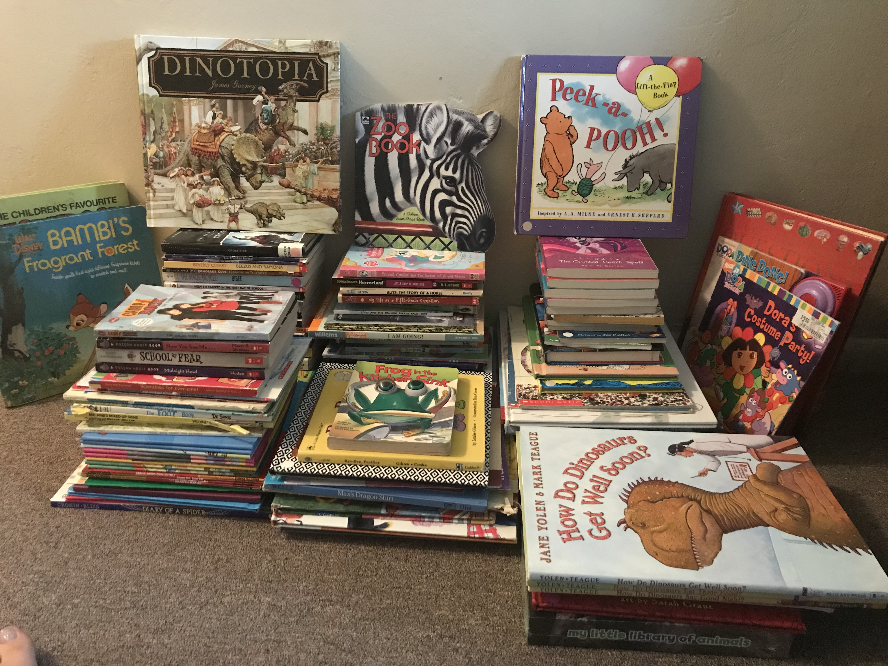

While registering for classes for the Spring 2018 semester, I noticed LAIS 376 (Service Learning). I remembered how much I enjoyed doing community service in high school and figured it be pretty cool to not only get back into it, but recieve easy college credit for it. I expected there would be some writing assignments here and there, but didn't think there'd be much beyond that. However, the course turned out to be much less manageable than I'd anticipated.
The actual community service project was the easy part. The difficulty came with keeping up with the copious amounts of reading and writing assignments. It would have been fine if the other three courses I'd stacked on top of it weren't all project oriented coding courses. But, that's my fault for biting off more than I could chew. I've always done things like that, getting overly ambitious. You think I would have learned my limits by now. In any case, this class did teach me a quite a bit about myself. It's taught my to be more flexible, more patient, and less impulsive. These three traits also happen to be in the habits of the mind chart discussed in the course. I also learned a lot about modern day issues. Many of these issues like gangs and racism, I was aware of, but I didn't realize the severity of.
The service project I'd decided to take on was volunteering as a tutor for the Reading Partners organization. For four hours a week, I would drive to Force Elementary School to tutor two kids that are behind in their reading in one-on-one sessions. The kids I was assigned to work with were a fourth grader and a first grader.
Many of our class discussions revolved around the concepts of poverty and privilege. We focused not only the many definitions of these concepts, but the many forms it can take. Types of poverty, white privilege, drug abuse, and disabilities are specific topics that struck a chord with me throughout the semester.
Throughout high school, we were required to completed 30 hours or more of community service in order to graduate. You could also complete 100 + the last two digits of your graduating year (113 hours in my case) to be considered part of the "millenium club," which just got you an extra cord to wear during graduation. For those reasons, I ended up doing over 200 hours of service at the Veteran Affairs Medical Center where my dad worked as an I.T. I was usually placed in the warehouse or in SPD (which is pretty much another warehouse, but for medical supplies). I spent my days during the summers filling supply orders, delivering supplies and packages to the departments throughout the hospital. I often filled orders so fast, that I would get the staff ahead of their work and we would just sit around listening to music. Since my tasks were all behind the scenes work, I didn't see much of the impact of the hospital's community, but it was still fulfilling to help get things done.
Throughout middle school and high school I would grow out my hair and donate it to Locks of Love. Locks of Love was a non-profit organization that made wigs for children with cancer. It was an easy task that I didn't have to think much about. Every time my hair seemed long enough, I would just go to the salon to get it cut and donated. The thought of helping kids that were losing their hair to cancer treatment made me feel good. Until an investigation revealed that Locks of Love wasn't as non-profit as I thought. Apparently, they would charge the families of the cancer patients for the wigs. I felt betrayed at the time; I was donating my hair so that they could make a profit. I could have been dyeing my hair sooner or I could have been getting paid for giving my hair. Either way, I stopped donating my hair after that discovery.
My mother and I used to donate our old clothes to Goodwill on a regular basis. However, after it was made known to the public that the underpaid their disabled employees, we've refused to donate a single item. We have several disabled family members and it felt wrong to support an organization like that, especially when the CEO was making hundreds of thousands of dollars in profit.
Every now and then, my church will set up a service project with local food banks that help feed low income families. During these events, I'll go down to the food bank and help them sort out the food donations if I have the time.
When I was accepted into the National Honors Society in high school, they required their members to complete 20 hours of service each semester. Luckily, they didn't just leave the members to figure out the where/when/what details. They provided several opportunities throughout the semester. these were all small projects such as manning a stopwatch at a swim meet, running a craft station at a Christmas party for an elementary school's after school tutoring program, and serving food to guests at a Christmas benefit concert. During the school canned food drives, I believe they even allowed you to substitute one donated can of food for fifteen minutes of service up to 5 hours worth of cans.
In all of my past experiences in service, I was always doing work behind the scenes. I was never in any kind of direct contact with those I was helping. There was definitely a missing feeling of satisfaction that came with not seeing how the results affected people.
The mission of Reading Partners is to help children become lifelong readers by empowering communities to provide individualized instruction with measurable results.
Reading partners aids low income schools by providing one-on-one tutoring for students from kindergarten to fourth grade who are a year or two behind in the reading capabilities. They encourage reading at home by allowing the students to choose a book at the end of each session to keep forever.
Reading Partners has branch locations in California, Colorado, Washington, Minnesota, North Carolina, South Carolina, Oklahoma, Texas, Maryland, New York, and Washington D.C.
The volunteers are essential at reading partners. They are the tutors or reading partners paired with the kids. Each tutor is assigned one or two students that they will work with for the whole semester. This repetition creates a bond between the student and the tutor that increases the effectiveness of each lesson. Lesson plans are provided by the organization, so the only prep work a volunteer has to do is show up a few minutes early to look over the plan.
You can find out more about Reading Partners on their official website.
Have an extra hour or two in your daytime schedule, volunteer as a tutor.
The school I decided to volunteer at was Force Elementary in Denver. I would drive down to the school for two hours on Tuesday and Thursday mornings. For the first hour, I worked with a first grader and then switched immediately to a fourth grader for the second hour. On days where one of my kids was absent, they'd have me work with another student that was behind on their attendance. When I started doing two kids instead of one, it took me a little while to adjust to the sudden mental switchover of who I was tutoring and how? Each session starts of with a ten minute tutor read aloud, where the kid picks out a book for the tutor to read from the shelves. Not only did this help me improve my speaking fluency, but it helped me figure out what topics each kid was into.
The first student I was assigned to work with was a fourth grader that struggled in reading comprehension. Many of our lessons involved reading either a book or an article followed by filling out worksheets about what we read. We would write summaries, make inferences, and discuss informational texts. After each lesson, we'd pick out a word or two that she couldn't define and add it to her Wonder Words Journal so that we could review it in future sessions. She's an interesting girl. Her favorite things to read are Diary of a Wimpy Kid, Goosebumps, and books about animal (except those that live in the ocean) especially pandas. She also likes to talk about her dogs a lot. When she reads, she has a tendency to try and rush through the book. Sometimes she'll skip over words or replace them with another word without realizing it. She regularly expresses her dislike of writing when we get to the worksheets, but I think she's getting more comfortable with it. She can be a bit hard to read, I can't always tell whether or not she's fully engaged in our lessons. Sometimes she'll be really talkative, and at other times she won't be. It's been kind of an emotional rollercoaster for me, especially on days that she'd tell her teacher she didn't want to go to Reading Partners at all when I felt we'd been getting along really well.
Towards the end of the semester, I feel as though she'd definitely made progress in her understanding of the material she reads. I've even been impressed with how much she wants to read some of the informational texts. Throughout the semester, I've picked out and given a few books to her that I thought she's like. The were normally Goosebumps books, but one was a big book of questions and answers with a whole section on animals that I've had since I was a kid. It's my hope that our lessons and these books will give her the desire to continue reading in the future.
After the first week, I'd decided to pick up another session in the time slot before the one I already had and they put me with a first grader in the beginning readers level. Our lessons usually consist of learning the sounds of new letters or letter combinations, trying them out by reading new words with those letters, spelling words that have those sounds, learning new sight word, and then reading a book filled with these new sounds and words. After each lesson, we would pick out a few words he had trouble reading and add them to his Word Net to review in the future. He's very energetic and enthusiastic about almost everything. Sometimes I had a hard time keeping up with his energy levels. His favorite topics to read about are animals (mostly cats - and I mean he really, really loves cats), art, and sugary sweets. He likes to doodle on the whiteboard during our lessons, which is fine as long as he's paying attention. There's only one time where he bummed out and wouldn't continue with our lesson.
Towards the end of the semester, I feel like he's gotten to the point were he recognizes new words and sounds a lot better than he used to. Like with my fourth grader, I've picked out books to give him throughout the semester. They were all cat themed books, like "Pete the Cat", "Splat the Cat", and I even tracked down a book I remembered from my childhood called "The Fire Cat" about a yellow, spotted, fire fighting cat. I hope he never loses his enthusiasm.
For the last few weeks, I became unable to tutor my first grader because his teacher had placed him in another extra tutoring program that had scheduled him for the same time we usually met at. So for those weeks, I've been working with a few different second graders who were behind on their attendance because their usual tutors have been inconsistent with showing up.
Half way through the semester, I decided to hold a book drive at my church. I was put in contacted with the Reading Partners event coordinator who provided my with a pdf for flyers and handouts I could print. My site coordinator also gave me some bookmarks to distribute for the event as well. After getting permission from my bishop, I made an announcement in church and placed a basket in foyer to collect the books. I placed a flyer above the basket and handed out the bookmarks to anyone who want one. The book drive ended up being much more successful than I'd anticipated and I was able to donate over 200 books to the organization.
On May 11, an end of the year celebration is being held in the school cafeteria. Tutors have been asked to bring a book for their student as a final gift if they want to. If they do want to, they needed to bring it to the next tutoring session and show/give it to the site coordinator so that she can make sure that every kid will be getting a book. My first grader may really, REALLY like cats, but I also noticed that he enjoyed a book called "The Day the Crayons Came Home" when we read it over a few of our tutor read alouds. Turns out that this was the second crayon book made by the author, so I decided to get him the first book, "The Day the Crayons Quit", as my end of the year gift. Since my fourth grader enjoys reading about pandas, but could never find a panda book in the student-take-home shelves, I searched and searched until I found a chapter book involving pandas. "Panda-monium" is about a middle schooler who happens to be a genius detective who has to solve a case of a missing panda the local zoo had gone through great length to acquire. I hope they will enjoy my choices.
I'm the type of person that sets herself up a schedule and plans to follow it to a 't'. Unfortunately, this semester had other plans. On three different occasions, I would go to pick up my fourth grader and her teacher said she'd send her down in about 5-10 minutes so they could finish an oral test, test prep, or who know what. I would end up sitting there for the whole hour without her ever coming. My site coordinator would even go down to the classroom herself to check up on them. That caused me a bit of stress and depression because I hate wasting an hour away when I have other projects I need to be working on for college. These occurrences, along with the plethora of projects I had to do for other courses this semester (all of which I underestimated the time consumption of), have at least taught me that I should be better prepared for changes in my usual schedule. I have in no way mastered the level of flexibility I would have needed for the past few months, but I've started on the path of progress.
Next semester, I will only be taking the remaining 10.5 credits I need to graduate. Thanks to this, I will have Tuesdays and Thursdays completely free next semester. I've really enjoyed tutoring for Reading Partners despite all of the little bumps and headaches and I highly support their mission. Therefore, I've already signed up as a volunteer for my next and final semester at Mines. I'm excited to start a new chapter with their organization.
{kind=link}